Fundamentals of Mathematics II
MATH 1351 GIFs
Explore geometry diagrams, area relationships, and solid nets. Choose an image to open its individual page.
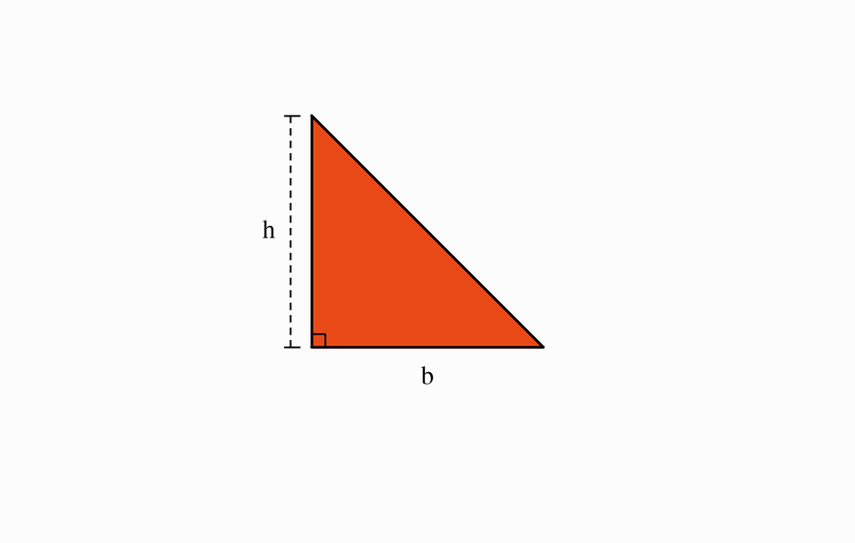
Triangle: Base & Height
A right triangle with base b and perpendicular height h.
View GIF →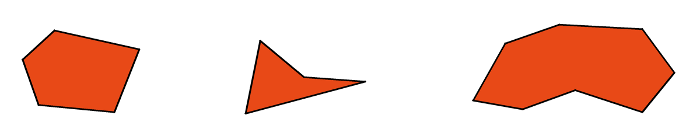
Irregular Polygons
Three irregular polygons, including convex and concave examples.
View GIF →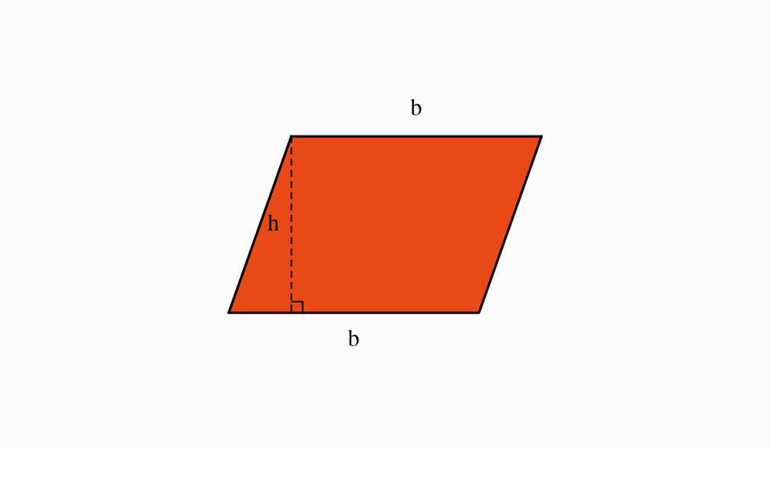
Parallelogram: Base & Height
A parallelogram with base b and perpendicular height h.
View GIF →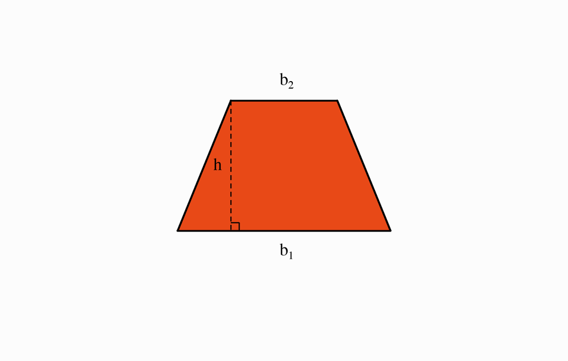
Trapezoid: Bases & Height
A trapezoid with parallel bases b₁ and b₂ and perpendicular height h.
View GIF →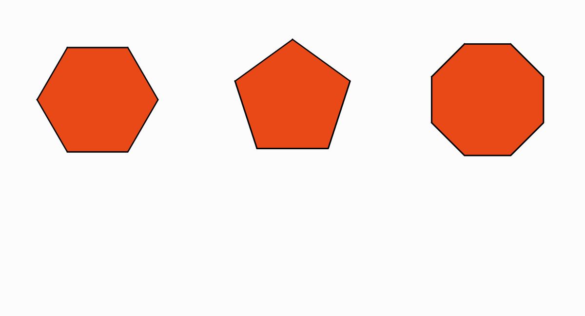
Regular Polygons
A regular hexagon, pentagon, and octagon.
View GIF →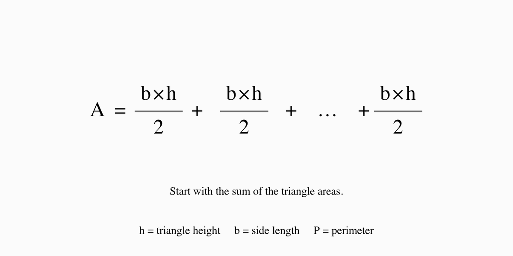
Polygon Area: Sum of Triangles
An area expression that adds triangle areas, with labels for triangle height, side length, and perimeter.
View GIF →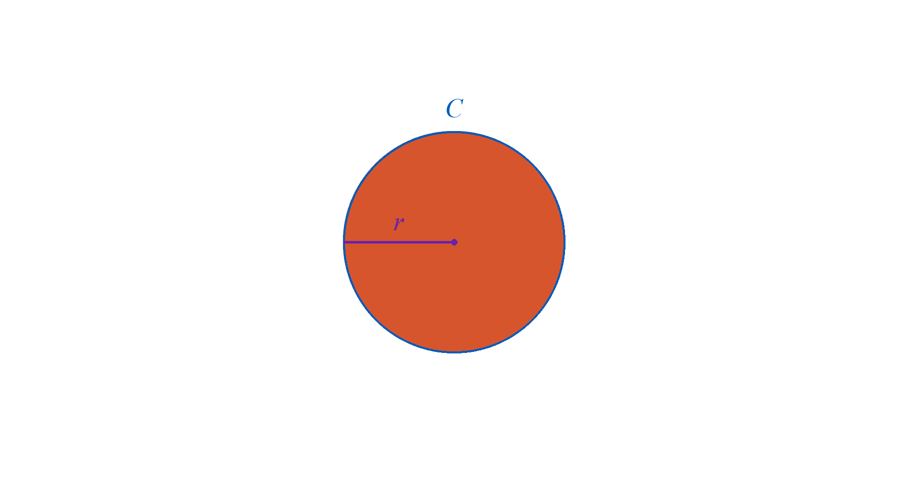
Circle Area: Sector Rearrangement
Follow a circle labeled C and r as its sectors form a rectangle labeled b and h.
View GIF →Rectangular Prism: Net
A rectangular prism unfolds into six rectangles and folds back into its original shape.
View GIF →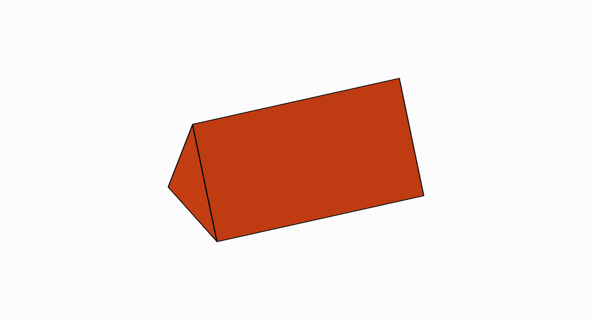
Triangular Prism: Net
A prism with equilateral triangle bases unfolds into three rectangles and two triangles, then folds back.
View GIF →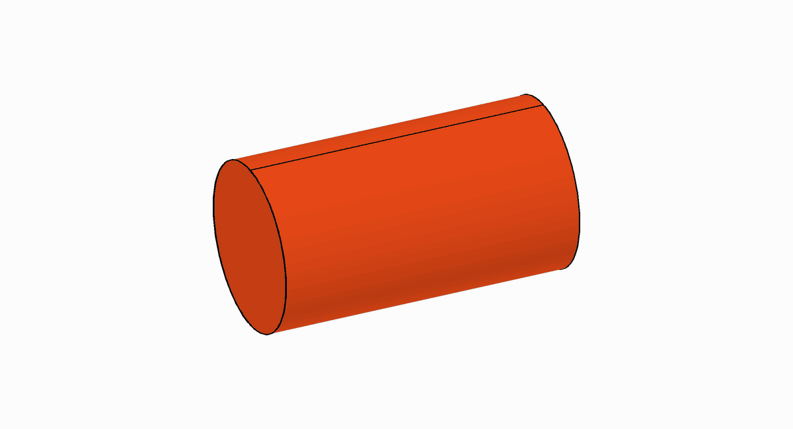
Cylinder: Net
A cylinder opens into a rectangle and two circular bases, then rolls back into its original shape.
View GIF →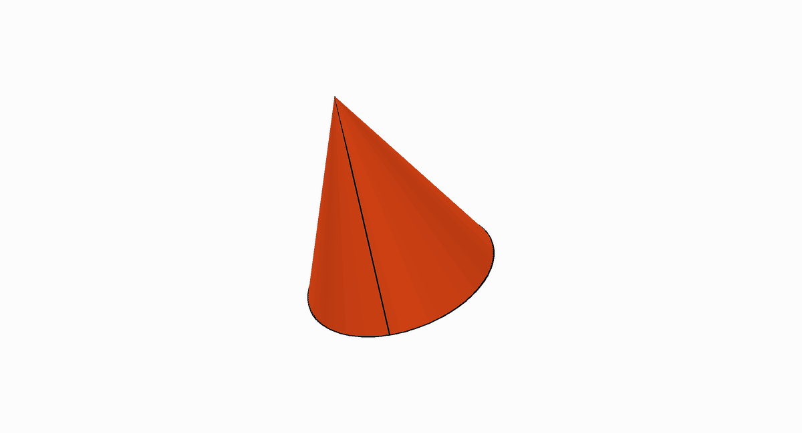
Cone: Net
A cone unfolds into a circular sector and one circular base, then folds back.
View GIF →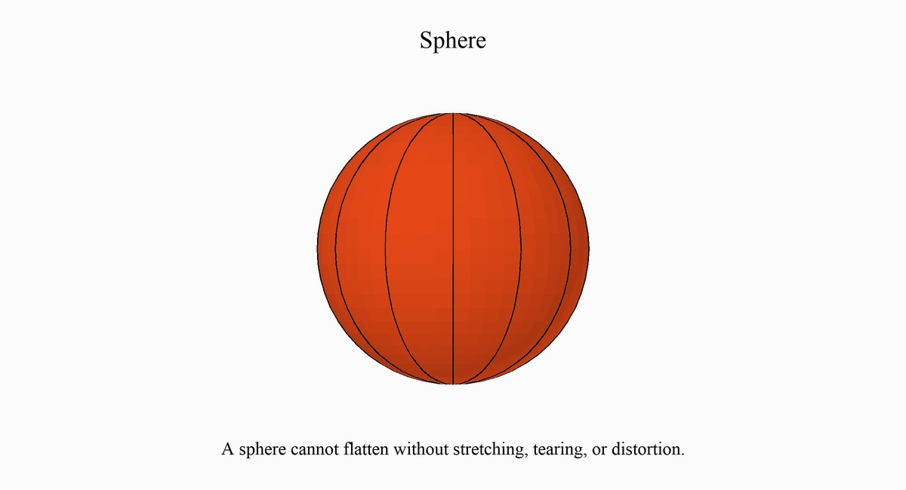
Sphere: Why There Is No Flat Net
A sphere separates into curved strips. Attempting to flatten them produces gaps and distortion.
View GIF →